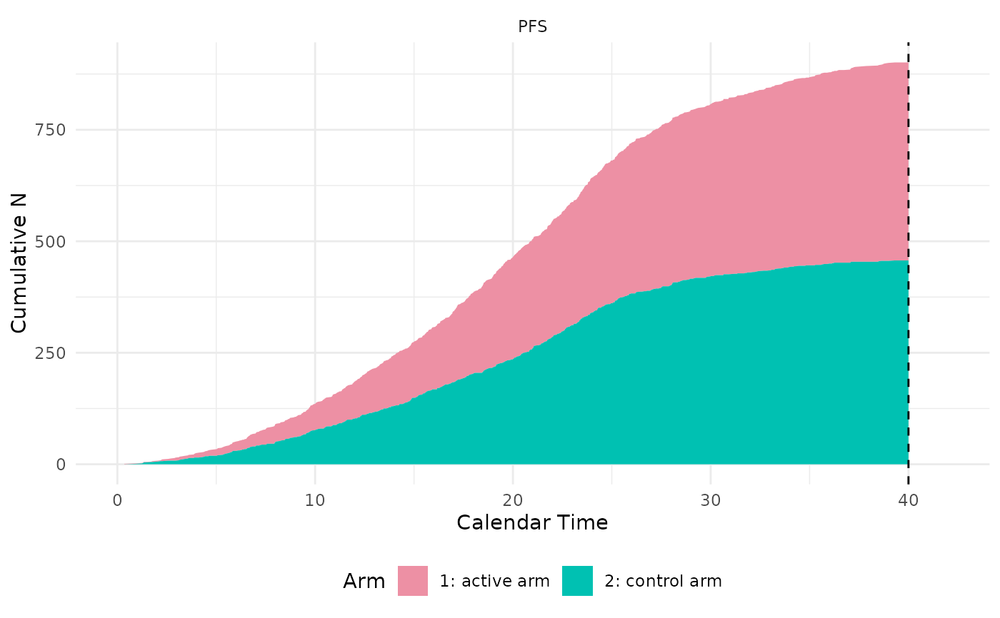

Define a controller of a trial. This is a user-friendly wrapper for
the class constructor Controller$new. Users who are not familiar with
the concept of classes may consider using this wrapper directly.
Examples
# a minimum, meaningful, and executable example,
# where a randomized trial with two arms is simulated and analyzed.
control <- arm(name = 'control arm')
active <- arm(name = 'active arm')
pfs_in_control <- endpoint(name = 'PFS', type = 'tte', generator = rexp, rate = log(2) / 5)
control$add_endpoints(pfs_in_control)
pfs_in_active <- endpoint(name = 'PFS', type = 'tte', generator = rexp, rate = log(2) / 6)
active$add_endpoints(pfs_in_active)
accrual_rate <- data.frame(end_time = c(10, Inf), piecewise_rate = c(30, 50))
trial <- trial(name = 'trial',
n_patients = 1000,
duration = 40,
enroller = StaggeredRecruiter,
accrual_rate = accrual_rate,
dropout = rweibull, shape = 2, scale = 38)
#> Seed is not specified. TrialSimulator sets it to 739796454
trial$add_arms(sample_ratio = c(1, 1), control, active)
#> Arm(s) <control arm, active arm> are added to the trial.
#> Randomization is done for 1000 potential patients.
#> Data of 1000 potential patients are generated for the trial with 2 arm(s) <control arm, active arm>.
action_at_final <- function(trial, milestone_name){
locked_data <- trial$get_locked_data(milestone_name)
fitLogrank(Surv(PFS, PFS_event) ~ arm, placebo = 'control arm',
data = locked_data, alternative = 'less')
invisible(NULL)
}
final <- milestone(name = 'final analysis',
action = action_at_final,
when = calendarTime(time = 40))
listener <- listener()
listener$add_milestones(final)
#> A milestone <final analysis> is registered.
controller <- controller(trial, listener)
controller$run(n = 1)
#> Condition of milestone <final analysis> is being checked.
#> Data is locked at time = 40 for milestone <final analysis>.
#> Locked data can be accessed in Trial$get_locked_data('final analysis').
#> Number of events at lock time:
#> patient PFS arms
#> 1 1000 699 <control arm, active arm>
#>
